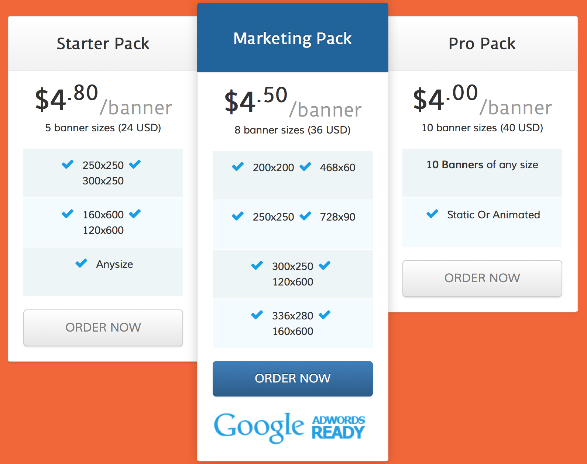

About
I'm Ken Lockett I have a passion for being creative which brought me to the Website Development and Design degree program here at Full sail University , I have multiple hobbies from R/c cars to Motorcycles but before it all my family comes first. My goals are to complete my studies here at Full sail with my B.S and then follow it up with my Masters.
Component1-Responsive Slider

I'm Ken Lockett I have a passion for being creative which brought me to the Website Development and Design degree program here at Full sail University , I have multiple hobbies from R/c cars to Motorcycles but before it all my family comes first. My goals are to complete my studies here at Full sail with my B.S and then follow it up with my Masters.
Component2-Online Store/Shop
I'm Ken Lockett I have a passion for being creative which brought me to the Website Development and Design degree program here at Full sail University , I have multiple hobbies from R/c cars to Motorcycles but before it all my family comes first. My goals are to complete my studies here at Full sail with my B.S and then follow it up with my Masters.
Component3-Pricing Table
I'm Ken Lockett I have a passion for being creative which brought me to the Website Development and Design degree program here at Full sail University , I have multiple hobbies from R/c cars to Motorcycles but before it all my family comes first. My goals are to complete my studies here at Full sail with my B.S and then follow it up with my Masters.
Component4-Drop Down Menu
I'm Ken Lockett I have a passion for being creative which brought me to the Website Development and Design degree program here at Full sail University , I have multiple hobbies from R/c cars to Motorcycles but before it all my family comes first. My goals are to complete my studies here at Full sail with my B.S and then follow it up with my Masters.
Component5
I'm Ken Lockett I have a passion for being creative which brought me to the Website Development and Design degree program here at Full sail University , I have multiple hobbies from R/c cars to Motorcycles but before it all my family comes first. My goals are to complete my studies here at Full sail with my B.S and then follow it up with my Masters.